Tutorial: Simplify a bicycle stem for simulation
In many instances, you must perform a simulation on a critical part in an assembly. You could simulate the entire assembly, but that may entail a lot of time and effort in model setup plus the possibility of a long solve time. A viable alternative may be to simplify the simulation without compromising the integrity of the results.
You do this by:
-
Imposing the necessary boundary conditions onto the critical part, not the entire assembly, thereby saving time and effort.
-
Simplifying the problem by removing features that are not crucial to the physical behavior of the part under loading.
In this activity, you do both of the above on the stem supporting a bicycle handlebar. Specifically, you determine the stress on the stem when a force of 667 N (or 150 pounds-force) is applied to the handlebar, and hence the stem. You can assume that the force is completely transmitted to the front end of the stem; therefore, the entire handlebar assembly can be simulated by focusing on the stem itself.
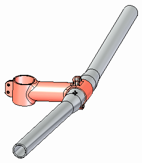
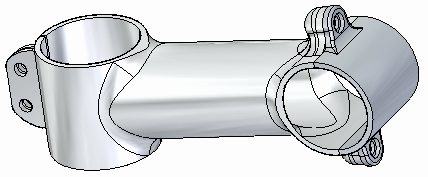
The stem part is an assembly consisting of two pieces. Yet the applied force can be considered acting upon the rear of the handlebar mount portion of the stem.
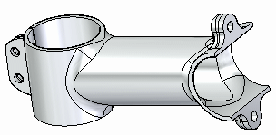
As part of the simplification process, you could remove the bolted features, as these do not play a role in the study.
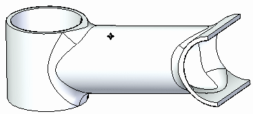
When doing any simulation, you should look at a part outside of its assembled context, as well as reduce its geometric complexity. You get accurate results in a shorter period of time.
-
Open FE_bicycle_stem.par.
Simulation models are delivered in the \Program Files\Siemens\Solid Edge 2023\Training\Simulation folder.
-
Create a new study.
-
Select Simulation tab→Study group→New Study.
Note:The part has a defined material of Aluminum, 6061–T6.
-
Choose the Linear Static study type and Tetrahedral mesh type.
-
-
Rotate the view so you can see the underside.
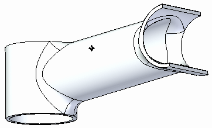
-
Add a force load.
-
Choose Simulation tab→Structural Loads group→Force.

-
Select the underside faces shown.
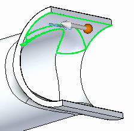
-
Select the origin of the steering wheel and drag it so that it snaps to the edge of the cylinder.
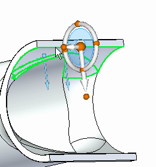
-
While holding the Shift key, select the steering wheel torus.
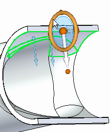
-
Type an angle of 150° and click in the upper-left quadrant of the steering wheel torus.
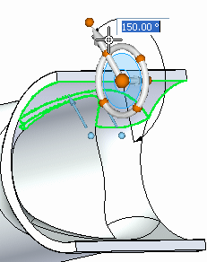
-
Type 667 N (150 pounds-force) for the force value.
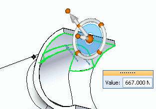
-
Right-click in space to accept the force, and then click Finish.
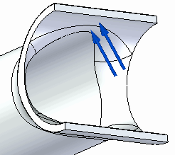
-
-
Rotate the view so you can see the top of the part.
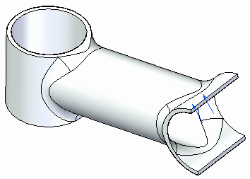
-
Define a fixed constraint on several faces.
-
Choose Simulation tab→Constraints group→Fixed.

-
Select the top and bottom planar faces, as well as the outer and inner cylindrical faces as shown.
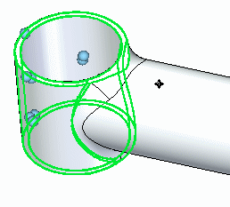
-
Right-click in space to accept and click to finish.
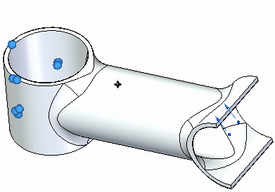
-
-
Mesh and solve the study.
-
In the Simulation Pane, turn off constraints and loads by clearing their respective boxes.
-
Select the Mesh command, and then select Mesh & Solve.
After a few moments, the part is meshed and solved. Stress results are displayed in the Simulation Results environment.
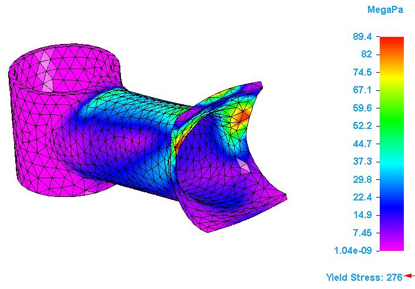
-
-
Choose Home tab→Data Selection group→Displacement.
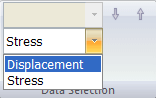
Results for displacement are displayed.
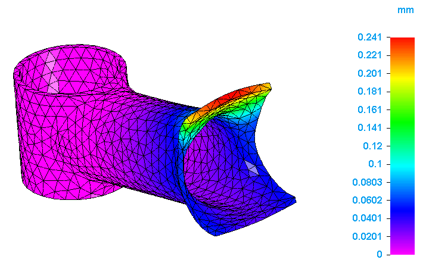
-
Close this file.